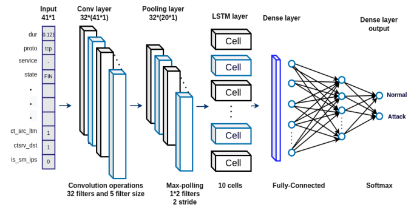

HumbleBeeAI Case Study: Deep Learning Network Intrusion Detection Across Balanced and Imbalanced Datasets
HumbleBeeAI presents published research comparing deep-learning network intrusion detectors across three benchmark datasets and balanced and imbalanced training conditions.
Executive Summary
Network operators need ways to distinguish benign traffic from attacks, including activity that does not match known signatures. This research evaluates supervised deep-learning approaches for binary network intrusion detection, comparing CNN, LSTM, RNN, GRU and CNN/LSTM models on benchmark traffic data. It is a published research study, not evidence of a deployed client system or a production service. The article, “Performance Evaluation of Deep Learning Based Network Intrusion Detection System across Multiple Balanced and Imbalanced Datasets,” was authored by Azizjon Meliboev, Jumabek Alikhanov and Wooseong Kim and published in Electronics, 11(4), article 515, on 9 February 2022. Read the published paper [PDF p. 1]
Context and Challenge
The study addresses the challenge of classifying network activity as normal or malicious. Its relevance is the difficulty of evaluating detectors when attack and benign records are not evenly represented: the paper notes that class imbalance and the amount of training data affect model performance. The comparison is therefore designed to examine both balanced and imbalanced training scenarios rather than relying on a single dataset or condition. [PDF p. 7] [PDF p. 5]
The affected users are framed in the paper as network security practitioners who need to identify suspicious traffic; it describes a possible deployment workflow in which detected malicious traffic can notify administrators, firewalls or intrusion-prevention systems. That deployment is a scenario discussed by the authors, not a reported implementation from this research. The work uses labeled flow-level benchmark records and does not report a client’s existing operational workflow, constraints, or field deployment. [PDF p. 1] [PDF p. 10]
Solution and Capabilities
The authors implemented and compared supervised deep-learning architectures for binary classification of attack versus normal records. The work evaluates flow-level data from UNSW-NB15, KDD Cup ’99 and NSL-KDD, using balanced and imbalanced data tracks; it reports training for up to 100 epochs with a learning rate of 0.0001. [PDF p. 7]
Architecture comparison: CNN, LSTM, RNN and GRU models, alongside CNN/LSTM combinations, were evaluated to compare convolutional feature learning with recurrent and hybrid approaches.
Benchmark coverage: the three datasets provide different traffic records and class distributions, enabling evaluation across more than one benchmark rather than a single test corpus. [PDF p. 5]
Balance-aware testing: separate balanced and imbalanced training tracks were used to observe how data composition affects detector performance. [PDF p. 7]
Model training details: the conclusion reports a batch size of 32, the Adam optimizer and learning rate 0.0001 for all networks, with GPU CUDA acceleration; the abstract reports training up to 100 epochs. [PDF p. 10]

Results and Business Impact
The results are benchmark observations from the authors’ experiments, not measured operational or financial outcomes for a client. Across the tested datasets and conditions, the authors report that CNN and CNN/LSTM approaches performed strongly relative to the other evaluated architectures, while also emphasizing that results varied with dataset and balance. [PDF p. 7]
The study reports CNN performance as notable across all three datasets on accuracy, precision, recall and F-score. Its experiment notes that LSTM also performed strongly. [PDF p. 7]
CNN/LSTM combinations required more time and epochs to reach adequate results, according to the authors’ experiment discussion. [PDF p. 7]
GRU and RNN combinations did not improve performance on imbalanced UNSW-NB15 data in the reported observations, while they worked well with balanced data. The authors also conclude that greater data volume and balanced data affect model performance. [PDF p. 7] [PDF p. 10]
No client deployment, reduction in incidents, operating-cost change, or other business impact is reported or measured in the supplied research material.
Limitations and Next Steps
The findings are limited to the evaluated models, benchmark datasets, binary classification setup and experimental conditions. The study’s results vary by dataset and balance, and should not be treated as a guarantee of performance on live network traffic. The paper notes that its flow-level approach uses header-based high-level data and does not depend on IP addresses or payload data. [PDF p. 10]
No production deployment, pilot, planned product work, live-traffic validation, or follow-on implementation is described in the supplied material. Any next step beyond the published benchmark evaluation is therefore unknown; real-world effectiveness and business impact have not been established by these results.
Conclusion
This published HumbleBeeAI research compares deep-learning intrusion-detection architectures across three benchmark datasets and balanced and imbalanced training conditions. It offers evidence that CNN and CNN/LSTM models are promising within the reported experiments, while underscoring that model performance depends on the data and evaluation setting. It does not establish production readiness or client business impact. [PDF p. 10]